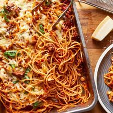

Spaghetti

Description:
Spaghetti (Italian: [spaˈɡetti]) is a long, thin, solid, cylindrical pasta.[1] It is a staple food of traditional Italian cuisine. Like other pasta, spaghetti is made of milled wheat and water and sometimes enriched with vitamins and minerals. Italian spaghetti is typically made from durum wheat semolina.[2] Usually the pasta is white because refined flour is used, but whole wheat flour may be added.
Ingredients:
- 1 pound dry spaghetti
- 1 onion, chopped
- 4 cloves garlic, minced
- 1/4 cup olive oil
- 1 (28 ounce) can diced tomatoes
- 1 pinch red pepper flakes
- 1/2 teaspoon salt
- 1/2 teaspoon ground black pepper
- 1/4 cup chopped fresh basil
- 1/4 cup grated Parmesan cheese
Steps:
- Bring a large pot of lightly salted water to a boil. Cook spaghetti in the boiling water, stirring occasionally until tender yet firm to the bite, about 12 minutes. Drain.
- Heat olive oil in a skillet over medium heat. Cook and stir onion in hot oil until tender, about 5 minutes. Add garlic; cook and stir until fragrant, about 1 minute. Add tomatoes, red pepper flakes, salt, and black pepper. Reduce heat to medium-low and simmer until flavors combine, about 10 minutes.
- Stir basil into sauce and simmer until basil is slightly wilted, about 2 minutes. Toss spaghetti with sauce and top with Parmesan cheese.